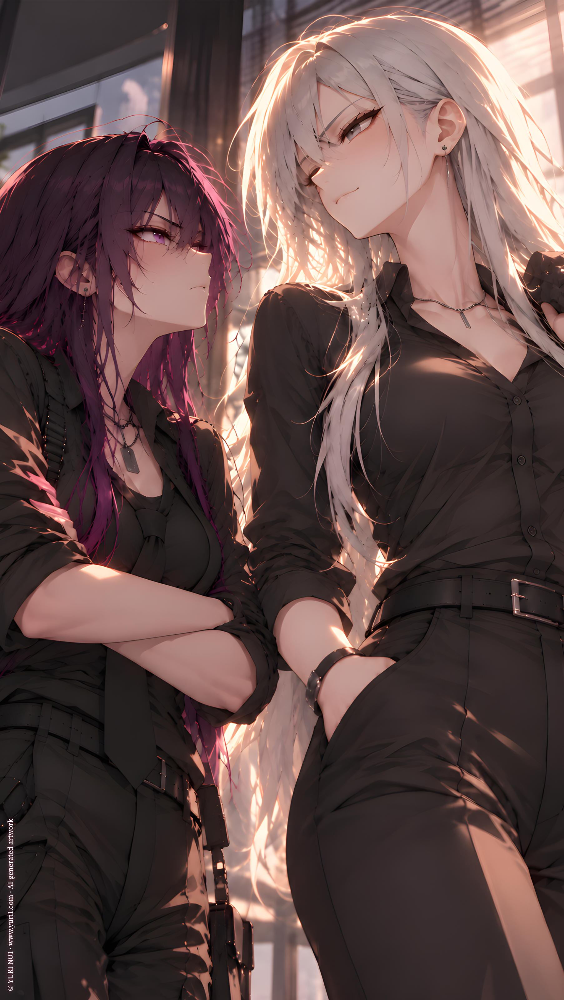

ORIGINAL TRACK ／ YURI NO1
Dangerous Silver
C.Curo · Cat Fighting
Lyrics · Base Script
[Verse 1]
Door swings open
Meeting running late
Silver in the sunlight
Black shirt buttoned straight
Everybody turns
I take the empty chair
No introduction needed
I’m already there
Someone dressed in purple
Looks me up and down
Like my face alone
Just challenged her crown
I say nothing
That makes it worse
One quiet little smile
And she’s ready to burst
[Pre-Chorus]
I didn’t start this
I barely spoke
But every little silence
Feels like a private joke
You want a reaction?
Come a little nearer
The harder you stare
The calmer I appear
[Chorus]
Dangerous silver
Cold in the light
Never raise my voice
Never need to fight
One look
One smile
One quiet “Hm?”
And suddenly
You’re angry again
Dangerous silver
Nothing to prove
You’re already watching
Every time I move
I never chased trouble
But trouble seems thrilled
To walk straight toward me
Dressed in purple
[Verse 2]
Someone says I’m cute
You nearly leave your seat
Someone says your girlfriend
You’re suddenly on your feet
Possessive little warning
Delivered loud and clear
Funny—
I don’t remember asking
Who belongs to whom in here
Then you cross the room
Ready for attack
Stop directly in front of me
And tilt your head back
Just a little taller
Nothing dramatic
But judging by your face
Apparently catastrophic
[Pre-Chorus]
“Don’t look down at me.”
I wasn’t.
“Hm?”
There—
Now you’re furious again
[Chorus]
Dangerous silver
Cold in the light
Never raise my voice
Never need to fight
One look
One smile
One quiet “Hm?”
And suddenly
You’re angry again
Dangerous silver
Nothing to prove
You’re already watching
Every time I move
I never chased trouble
But trouble seems thrilled
To walk straight toward me
Dressed in purple
[Bridge]
Maybe I should apologize
Would that help at all?
No?
Thought so.
You call me something
I answer once
You throw another spark
I let it burn
No grand challenge
No declaration
You’re doing enough
For the both of us
[Breakdown]
Silver hair
Black shirt
Hands in my pockets
Purple glare
Red face
Can’t seem to stop it
First day
New room
Already understood
This place is strange
I think I’ll stay
[Final Chorus]
Dangerous silver
Sharp in the light
Never need permission
Never need the fight
One step
One glance
One quiet “Hm?”
And there you go
Losing your cool again
Dangerous silver
Say what you will
The louder you get
The calmer I stand still
I never chased trouble
But trouble walked in
Stopped right below me—
And glared up again
[Outro]
“Hm?”
I wasn’t looking down.
...
Not much.
YURI NO1 Music \ https://music.yuri1.com